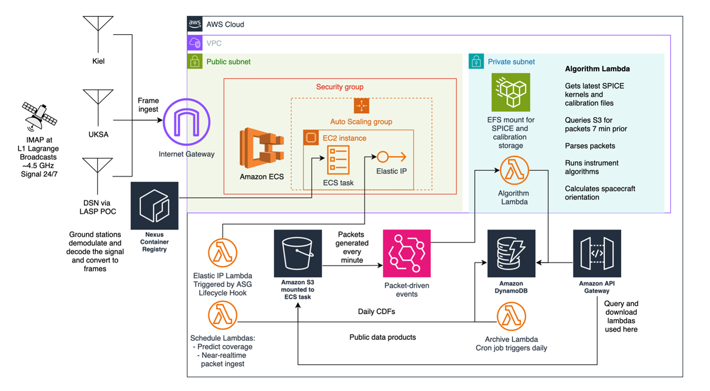

Laura Sandoval
Software Engineer at LASP supporting the IMAP Science Operations Center
I build real-time space weather data systems, AWS infrastructure, and mission operations tools for heliophysics missions, with a focus on I-ALiRT, scientific data pipelines, and cloud-based architecture.
About
My work spans real-time mission operations, scientific data systems, and cloud architecture for NASA mission support. I focus on low-latency telemetry ingest, operational reliability, and scalable data access.
Projects
I-ALiRT
Real-time telemetry ingest, processing, and distribution from international ground stations.
IMAP Data Systems
AWS CDK infrastructure, APIs, and science data workflows supporting mission operations.
SPICE & Geometry
Pointing frames, coordinate transforms, and data processing for heliophysics pipelines.
Architecture
A cloud-based architecture for ingesting, processing, and distributing real-time space weather data.
